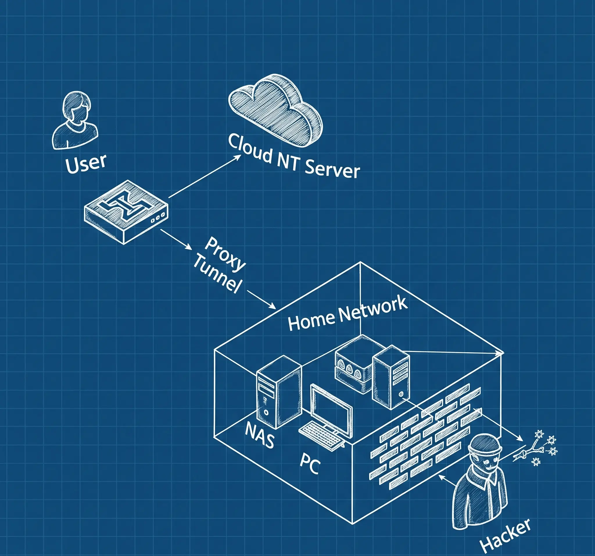
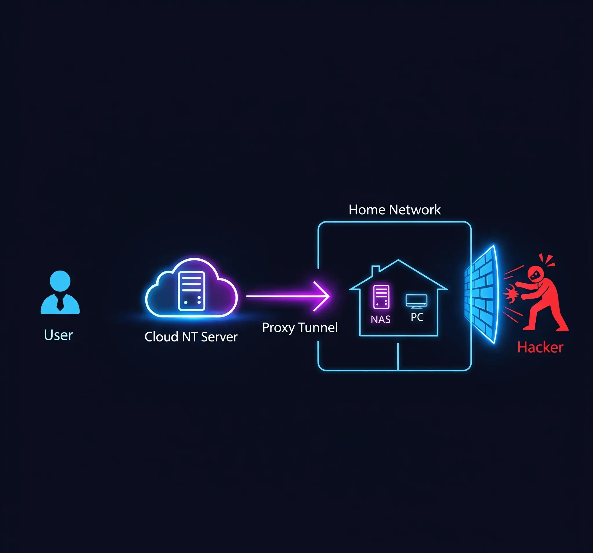
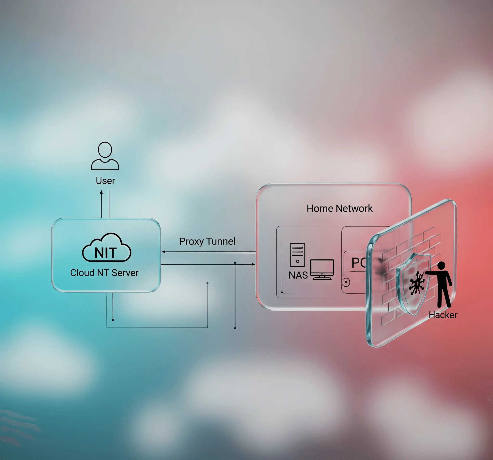

NT创意图志：一张图说清核心资产，家庭用户的好帮手
⚠️ 免责声明
本页面所展示的所有图片均由 Google Gemini 人工智能模型生成，基于用户输入的提示词自动合成，非人工拍摄或真实事件记录。图片内容仅用于视觉创意参考，不代表真实人物、地点、产品或事件，亦不构成任何形式的建议或承诺。根据 Gemini 使用条款 及其 内容政策，所生成图片的版权归 Google 所有或依据其授权生成，使用者需自行判断并遵守相关法律法规，不得用于违反版权、商标或肖像权的商业用途。
若对生成内容有疑问或需移除，请通过页面下方方式与我们联系。





我的智能小助手 3.0：打造一间全自动化的“时光放映室”
欢迎回到我的“偷懒”摄影系统系列。在之前的篇章里，我们一起见证了一个普通摄像头如何被赋予“思考”的能力，以及如何为它建造一间优雅、便捷的“控制室”。然而，故事并未就此落幕。我们那个聪明的摄影师，每天都在聪明地“偷懒”，为我们精准地捕捉了海量、充满价值的瞬间。这些照片，如同一颗颗散落的珍珠，蕴含着时光的秘密，静静地躺在服务器的硬盘深处。
是时候了，我们该把这些珍珠串联起来，让它们在光影的流动中，绽放出璀璨夺目的光芒。今天，我将向大家展示这个项目的最终章，也是我个人认为最激动人心的部分——打造一间全自动化的“时光放映室”。这个放映室的核心，是一个强大而可靠的Shell脚本。它是我整个系统的“幕后总导演”，肩负着神圣的使命：在每个寂静的黎明到来之前，将过去一天的万千照片，自动合成为一部部精彩纷呈的延时影片。
项目代码：https://github.com/AndroidOL/camera-capture/tree/main/merge
从“素材堆积”到“影像诗篇”：最后的“亿”步
想象一下，如果没有这位自动化的“总导演”，我的生活将是怎样一番景象？那将意味着，每天，我都需要像一个数字时代的“矿工”，手动登录到远程服务器，在前一天产生的、可能多达几十GB的成千上万张照片中进行挖掘；然后，将这些“原矿”小心翼翼地下载到本地电脑；接着，再启动复杂的视频编辑软件，将这些照片一张张拖入时间线， painstaking 地设置帧率、编码器、码率……最后，在漫长的等待中，点击“渲染”按钮。
这整个过程，不仅是一场与耐心和毅力搏斗的、毫无创造性可言的机械劳动，更可怕的是，它极易出错。万一哪天我忘了，或者因为工作繁忙而错过，那天的“影像日记”就会出现一个无法弥补的空白。这不是我想要的。
我需要的是一个完全无人值守、极致稳定可靠、并且足够聪明的自动化流程。它应当是一位不知疲倦的艺术家，在每天固定的时间，比如万籁俱寂的凌晨，悄然启动，像一位技艺高超的电影剪辑师，将过去一天的零散素材，精心编排成一部完整的影片，然后优雅地将其安放于“家庭影片库”的数字货架上，静候我的检阅。
于是，这个倾注了我大量心血的自动化脚本——daily_photo_to_video.sh 应运而生。它远非一个简单的ffmpeg命令封装，而是一个拥有工业级健壮性的“智能生产线”。
“总导演”的超凡技艺：揭秘自动化脚本的核心设计
这个脚本的设计哲学，是**“追求极致的稳定与高效”**。我将它武装到了牙齿，让它能从容不迫地应对各种可以预见的、甚至难以预见的复杂状况。
1. 效率的极致：榨干硬件的每一分潜力
高速公路 - Ramdisk (内存盘)
直接在传统硬盘上读取上万张零散的小图片，同时写入一个巨大的视频文件，磁盘I/O（读写）的瓶颈会立刻显现，整个过程将变得异常缓慢。我的解决方案堪称激进：在服务器宝贵的内存中，直接开辟出一块高速的虚拟硬盘（Ramdisk）。
脚本启动后，会首先将所有待处理的照片，从拍照服务器通过网络高速同步到这块内存盘上。随后，视频合成（编码）的所有密集读写操作，也全部在这块虚拟硬盘内完成。内存的读写速度是普通硬盘的数十倍甚至上百倍，这无异于为数据的迁徙铺设了一条无视物理定律的、光速穿梭的“星际公路”，极大地缩短了处理时间。
专业引擎 - 硬件编码 (HEVC_RKMPP)
视频编码是典型的计算密集型任务，纯靠CPU来“硬算”，就像让一位全能但劳累的管家去做一件极其专业的木工活，不仅效率低下，还会让服务器的“心跳”（CPU占用率）飙升，风扇狂转。幸运的是，我所使用的服务器（基于Rockchip芯片）拥有专门的视频处理单元（VPU）。
我的脚本会精准地调用ffmpeg，并指定使用hevc_rkmpp这个硬件编码器。这相当于把专业的工作，交给了那位专门聘请的、技艺高超的“电影剪辑师”，让VPU来承担最繁重的编码任务，从而彻底解放了CPU。同时，我选择了高效的HEVC (H.265) 编码格式，它能在保持极高质量画面的同时，将视频体积压缩到传统H.264的一半左右，为我的“家庭影片库”节省了海量的宝贵空间。
2. 稳定性的基石：工业级的容错与自愈
在无人之境中独自航行的飞船，其价值不仅在于速度，更在于它应对宇宙风暴的生存能力。同样，一个需要常年无人值守的脚本，“逆商”至关重要。我为它构建了四重“安全协议”，来应对各种可能发生的意外。
| 场景 | 脚本的智能应对策略 |
|---|---|
| 脚本意外中断 | 使用trap清理机制，在中断时自动清理临时文件并卸载Ramdisk |
| 同时运行冲突 | 使用flock文件锁机制，避免多实例并发执行冲突 |
| 存储空间不足 | 提前检查目标路径剩余空间，避免写入中途失败 |
| 目标硬盘掉线 | 自动切换至备用存储路径，保障任务完成并暂停旧任务追赶 |
3. 智慧的调度：绝不错过任何一天的精彩
我希望我的“放映室”里，每一天的影片都是完整的，如同一部连贯的编年史。因此，脚本最智能、最让我引以为傲的部分，在于它那近乎偏执的“补全”逻辑。
脚本运行时会：
- 回顾过去7天的日志，检查是否有影片缺失或失败；
- 若发现遗漏，优先从最早的那天开始补；
- 二次验证远程素材是否还在，确保不会空转；
- 若全部完整，才处理“昨天”的新素材。
这样，系统就拥有了记忆与责任感，始终维持一份完整的“影像日记”。
一部“家庭史诗”的诞生
现在，这已经成为一种充满仪式感的日常。每天清晨，当我泡好咖啡，打开“家庭影片库”时，一部全新的、以昨天日期命名的延时影片已经静静地躺在那里了。
它可能记录了窗外雷阵雨的全过程，也可能捕捉了我加班至深夜的身影，又或只是平淡地描绘阳光在家中流转的痕迹。
这个自动化脚本，就像一个沉默而强大的心脏，为我整个智能摄影项目注入了源源不断的生命力。它将日复一日的、琐碎的视觉信息，升华为一部部浓缩了时间精华的影像诗篇，将冰冷的数据，提炼成了有温度的记忆，让我真正得以“看见”并“珍藏”那些无声流逝的时光。
创造的乐趣
创造的乐趣，就在于此——用代码和逻辑，去构建一个能自动为我们创造、整理和呈现美好的系统。
下一步，或许是训练一个AI，让它能自动为这些影片配上最契合的背景音乐，或者剪辑出“每周精华”了。
这条通往“更好生活”的创造之路，永无止境，而这，也正是其魅力所在。
我的智能小助手 2.0：给“偷懒”摄影系统开了扇全景落地窗
距离上次分享我的“偷懒”摄影系统已经有段时间了，那个会自己判断何时该拍照、何时该“摸鱼”的小家伙，已经默默地为我工作了很久。但随着时间的推移，一个新的“痛点”开始浮现：尽管它内部很智能，但与它交流的方式却很“原始”。
项目代码：https://github.com/AndroidOL/camera-capture/tree/main/web-ui
从“命令行考古”到“指尖轻触”：一次体验的革命
在过去，每一次与它的互动，都像是一场深入服务器内部的“数字考古”之旅。
- 想看看昨天拍到了什么？请启动 SSH 客户端，连接服务器，用
cd和ls命令在迷宫般的目录结构里穿行。 - 想调整拍摄的灵敏度参数？请用 Vim 或 Nano 修改配置文件，保存后再
systemctl restart，祈祷没改错字符。
这种体验繁琐且充满距离感。我的智能助手，它的喜怒哀乐、它的工作成果，都被一层名为“命令行”的黑盒子包裹着。
于是，我为它开了一扇窗：一扇能让我窝在沙发上，用最直观、最优雅方式与它交流的全景落地窗 —— 一个专属的网页控制台。
现在，一切都不同了：
- 打开浏览器，输入本地地址；
- 一个美观、强大的界面展现在眼前；
- 那个沉默的后台摄影师，拥有了鲜活的“面容”和灵巧的“双手”。
它的组成：
- 眼睛：实时监控窗口，无延迟。
- 双手：按钮菜单，一点即控。
- 大脑：复杂逻辑隐藏，美观又直观。
网页控制台的四大“超能力”
1. 时光抽屉：层级式的照片档案馆
灵感来自现实世界的“抽屉”。整个交互过程如同打开俄罗斯套娃般：
- 年度 / 月度：查看所有有记录的月份。
- 具体日期：以预览图展示每一天。
- 小时抽屉：点击后看到 24 小时分布。
- 分钟级照片：深入找到具体照片。
探索照片变得轻松、有趣、富有仪式感。
2. 实况视窗：永不眨眼的忠诚守望者
点击“实时监控”，系统立刻进入守望状态。
- 心跳刷新：前端每 2.5 秒请求一次画面，保持实时。
- 智能重连：摄像头掉线自动恢复。
- 夜间模式：环境变暗自动降亮，夜晚不刺眼。
3. 时光隧道：私人定制的纪录片生成器
“照片轮播”模式是我最爱的功能。
- 选择任意日期范围（如“2025 樱花季”）；
- 系统串联该时段所有照片，生成动态影片。
特点：
- 幻灯片模式：按时间顺序排列。
- 过渡效果：淡入淡出自然切换。
- 时间字幕：底部自动显示拍摄时间。
🎞️ 我就用它回顾了樱花从花苞到飘落的全过程，感动与震撼并存。
4. 明眸善睐：体贴入微的智能主题
我是夜猫子，因此加入了主题切换功能：
- 日间模式：蓝白配色，清爽。
- 暗夜模式：墨黑 + 绛红，护眼不扰人。
- 自动记忆：会记住你上次用的主题。
就像一个懂你的老朋友。
我的智能小助手：一个会“偷懒”的延时摄影系统
生活中那些安静流淌、不易察觉的诗意总是令人充满好奇。迷上了延时摄影因为它能将漫长的时间压缩成迷人的瞬间，让我们得以用肉眼观察到那些缓慢发生的变化，这本身就像一种时间的魔法。
于是，我翻出了家里那个在抽屉里沉睡了数年的 USB 摄像头，心中涌起一个温柔的念头：我想用它来记录，记录那些被我们匆忙忽略的、生活本身的呼吸。比如阳台上那盆多肉，如何在阳光的亲吻下，用我们看不见的速度悄悄舒展；窗外的云朵，又是如何被无形的手塑造成流动的雕塑；甚至是傍晚时分，夕阳如何在客厅的地板上，一寸寸地拉出长长的、温暖的影子……
项目代码：https://github.com/AndroidOL/camera-capture
从“勤奋的笨蛋”到“聪明的懒汉”：一次理念的进化
最开始，我的想法和大多数人一样，简单而直接：写一个脚本，让摄像头化身为一个不知疲倦的“劳动模范”，每分钟准时打卡，忠实地拍下一张照片。当我敲下最后一行代码并成功运行的那一刻，心中充满了小小的成就感。然而，这份喜悦在第二天清晨，当我检视成果时，便迅速被一种混杂着困惑与失望的复杂情绪所取代。
硬盘里，一千四百四十张照片整齐地排列着，它们是我的程序“勤奋”一整天的见证。但我快速滚动预览时，画面却像卡住了一样，静止得令人窒息。尤其是在那漫长的深夜时段，凌晨三点和三点零一分的客厅照片，别说茶几上的灰尘纹丝未动，就连空气本身，似乎都凝固在了那一刻。我忽然意识到，我创造的不是一个记录“变化”的工具，而是一个生产“重复”的工厂。
当我冷静下来，把这笔“数字遗产”量化后，我才真正理解了问题的严重性：
惊人的存储消耗：
- 日产量: 43200 张照片
- 月产量: 约 1296000 张照片
- 年产量: 超过 473040000 张照片
按每张照片分辨率 1920*1080 存储，每张照片占用大小 0.2MB 计算，每天将消耗近 8GB 的存储空间，对于家庭存储而言这并不算什么。但是对于嵌入式设备，ESP32 抑或是 RK 的单板机而言有点超出限制。
毁灭性的后期工作：
- 素材筛选: 为了剪辑出几分钟的精彩视频，需要在数十万张几乎相同的“废片”中大海捞针。
- 时间成本: 这哪里是艺术创作，分明是一场能耗尽所有热情的体力劳动。
为了更直观地展示这两种思路的差异，我做了一个简单的对比：
| 特性 | “勤奋的笨蛋”模式 | “聪明的懒汉”模式 |
|---|---|---|
| 工作原则 | 无差别、定时记录 | 智能判断、按需记录 |
| 每时照片数量 | 恒定 1800 张 | 几十到几百张不等，视变化而定 |
| 存储友好度 | 极低，呈线性爆炸增长 | 极高，只为有效信息付费 |
| 后期工作量 | 巨大，筛选过程极其痛苦 | 极小，几乎每张都是有效素材 |
| 最终成果质量 | 包含大量静止、无意义的“垃圾时间” | 节奏紧凑，聚焦于“变化”的精华 |
显然，我需要的是后者。一个真正懂得“什么时候该出手，什么时候该摸鱼”的、充满智慧的——聪明的懒汉。
给摄像头装上“大脑”：懒惰是第一生产力
于是，我决定对我的摄影系统进行一次彻底的、颠覆性的“智能化”升级。这次，我没有教它如何更努力地工作，恰恰相反，我教给了它一门艺术——如何合理地“偷懒”。
它的核心工作原理，就像一位经验老道、洞察敏锐的情报官，他从不屑于上报那些“一切正常”的乏味报告，而只在“有情况”时才发出电报。
为了让它具备这种高级的判断力，我为它设计了三步走的“智慧流程”：
视觉的纯化：看见本质，而非表象
清晨的冷光和傍晚的暖光，会给同一场景染上截然不同的色调，但物体本身可能纹丝未动。因此，系统在比较前，会先把彩色画面和存档照片都转换为只有黑白灰的“素描模式”（灰度化）。
变化的度量：为“不同”赋予权重
系统将两张黑白照片进行像素级的叠加比对，生成“变化地图”，并计算其中亮色区域占比，得出变化率百分比，用于衡量“发生了什么”。
决断的艺术：设定一条智慧的“偷懒”基准
我为它设定了一个阈值，例如 0.5%。低于此值则跳过拍摄，只有当变化显著时才记录，节省资源、聚焦重要。
生活中的贴心管家：一个高度自律的系统
为了让它能 7x24 小时稳定运行，我设计了以下几套机制：
Next-Terminal：家庭内网安全访问解决方案
家庭内网安全访问新方案：Next-Terminal的技术实践与应用
在信息技术快速普及的今天，越来越多的家庭用户搭建起属于自己的服务器、小型 NAS 系统、家庭自动化控制中心等内部 IT 架构。与此同时，如何安全、高效、低成本地从公网访问这些设备，成为一个亟需解决的问题。
开源项目 Next-Terminal（简称 NT）为家庭用户提供了一个优雅的解决方案。它不仅开源、免费，而且资源占用极低（仅约 200MB），性能极高，可以轻松部署在阿里云、腾讯云、轻量云等公网节点上，承担所有流量入口，并将请求安全地转发至家庭内网中的各种服务，真正实现了安全代理与权限控制统一入口管理。
一、家庭网络公网暴露的安全隐患分析
1.1 常见家庭网络暴露方式
假设你在家中部署了一个网站或者 NAS 设备，并希望在外网访问，常见的做法是：
- 光猫直接进行端口映射（公网 IP）；
- 直接域名解析至家庭公网 IP（动态 DNS）；
- 使用 IPv6 地址直连
1.2 潜在安全风险，公网攻击风险高
无论你使用动态域名 + DDNS 还是公网 IPv6 地址，只要设备暴露在公网，就意味着：
- 被黑客扫描的几率大幅增加；
- 任何人只要知道你的 IP 地址就能尝试连接；
- 一旦服务有漏洞（如老旧 NAS、PHP 漏洞），攻击者可能直接入侵内网。
在 IPv4 中，我们普遍使用 NAT（地址转换）将多个内网设备通过一个公网地址上网。但在 IPv6 中，每个设备都可以拥有公网地址，虽然这有助于直连通信，却也带来新的隐患，例如：
- 地址可预测性，攻击者可通过已知地址推测整个/60前缀范围；
- 家中每台设备（如路由器、NAS、摄像头、智能电视）都有自己的 IPv6 地址；
- 攻击者只需知道你服务器的一个 IPv6 地址，即可推测出整个网络前缀范围；
- 由于 IPv6 地址空间虽大，但仍可进行特定范围段的端口扫描与暴力测试；
- 很多家庭设备的防火墙并未对 IPv6 有严格配置，一旦开放了某个端口，可能直接被访问。
安全警示：IPv6的全球可达性特性使家庭设备更容易被定位和攻击。
二、Next-Terminal 如何帮你解决以上问题？
Next-Terminal 采用“统一入口代理+精细化权限控制”机制，主要特点包括：
- 不再暴露内部端口到公网；
- 只对可信入口开放端口；
- 支持细粒度访问控制与登录认证；
- 可审计、可管理、可授权访问你的服务。
graph LR
A[用户] --> B[NT 公网节点]
B --> C[家庭网关]
C --> D[内网服务]
场景模拟：将家庭内网网站安全暴露给公网
假设你家中部署了一个网站（如 http://192.168.1.100:8080），你想在外面访问它，但又不希望任何人都能直接连接。
Hugo 网站搭建入门
本文详细讲解如何在 macOS 环境下，从零开始搭建 Hugo 静态网站，不依赖 Homebrew，包含 Git 主题添加、配置修改、内容创建等关键操作，帮助你快速搭建属于自己的高性能博客。
一、准备工作：下载安装 Hugo 与 Git
1.1 手动下载安装 Hugo
-
下载对应 macOS 的扩展版（Extended），如：
hugo_extended_0.148.0_darwin-universal.tar.gz。 -
在终端执行以下命令：
cd ~/Downloads tar -zxvf hugo_extended_0.148.0_darwin-universal.tar.gz sudo mv hugo /usr/local/bin/ chmod +x /usr/local/bin/hugo -
验证安装：
hugo version
确认输出包含 extended 字样。
1.2 安装并确认 Git
macOS 默认自带 Git，如果没有，可按提示安装 Xcode Command Line Tools：
git --version
确保能正常显示 Git 版本号。
二、创建 Hugo 项目
2.1 创建新网站
hugo new site www-blog
其中
www-blog是新建的文件夹名称，可以随意取名，不影响博客标题或内容，只是项目根目录名称。